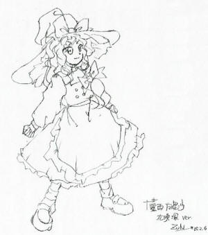
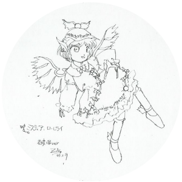
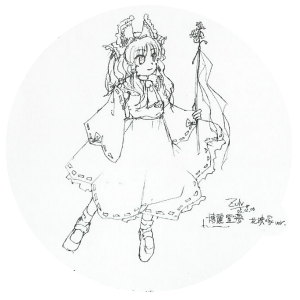

Introduction to Touhou Game Design
To accompany this second serialized spin-off, and with the upcoming release of Phantasmagoria of Flower View, the kannushi of fantasy, ZUN, will show the inner workings of his mind and activities. The goal of this book was to confront how ZUN has not talked about the game from a story or creative stance, and to express the concept behind his new game PoFV.
The power of the kannushi's kotodama shall now stimulate your imagination from the core...
Estabishing the Foundation for Creating a World in Game Philosopy
--Today, we will be asking ZUN about the philosophy at the heart of his games. First, may I ask how you felt the first time you played a game?
In the cafe at my parent's house, when I was in kindergarden they placed a table arcade machine there to lighten up the atmosphere. Because of that, I was greatly interested in games, and during elementary school, the NES came out and we bought one right away. When I got a new game, I'd play them with my friends for as long as we could. But normally I would go outside and catch bugs too. I was a normal countryside kid after all.
--What game from back then left an impression on you?
Super Mario Bros. left the biggest impression on me. Before then, games didn't scroll, and there were still many games with black backgrounds. But in Super Mario Bros., if you went underground, there was an underground world. If you went above the clouds, there was a world above the clouds. All the different places you could go in itself surprised me, and every time I went somewhere new, I was impressed.
The next impact was from... Street Fighter 2. That game's impression was almost like a second revolution. Everyone would play the game, so it was a way to fight without physically hurting each other. The play control was important too. I would put in up to 10,000 yen in a day sometimes. That made my allowance disappear in a flash though. (lol)
--In both of these games, what points about the game's genre or nature were important?
Those games were revolutionary because they had things like different systems from games before them, creating new atmospheres within themselves. Later, people would say stuff like That game engine was revolutionary or The characters had a lot of appeal, but at the time, no one really thought about the individual aspects because they were too busy playing. But that wasn't really the case, it was just popular to say. The systems in those games weren't just the pinnacle of all the games made up to that point, there was also a decisive difference. I wouldn't go as far as to call it creating a new world -- it's a little different from the usual meaning -- but they were called the new standard.
Now to speak about my thoughts on game design, about establishing the foundation for creating a world, and designing a new world for my works. At the base of everything is the game world, and I structure the game's genre and system upon that, from which the pictures and the music flows. One can feel this establishment as they play the game, so I believe. That's why the game's genre as it is called is not just one part of the game, but if you get too obsessed about that, it will lose all meaning as a video game and will only create anxiety.
A lot of people say The true nature of a game is it's genre, and the genre and the world it takes place in are different things. often, however, I don't think that they are contradictory concepts, and that they should be thought of as one. If you look at Xevious or Space Invaders, it is obvious that even at that time, games weren't mere collections of symbols. For example, the very first video game was only about bouncing a ball back and forth, but that wasn't how it was originally played. It was called Tennis. Just how the first game was based on Tennis that took place in The World, that's what I consider when I make games.
However, even with that theory, if it's not interesting, it probably can't be considered a success. On the other hand, only focusing on the basics isn't interesting either, so it is important to be able to connect both aspects to make a fun game. As one gains experience, being able to adjust to a game's genre or parts of its system is unmistakably engaging, and I think that games without that spark are missing the point. Before it can be played as a game, I think it is very important for my works to have its own setting.
--Now, when you say creating a world, that comes with very broad implications, so I imagine there will be many different approaches to establishing a world.
Please think of the quality of a created world and how well it is established as different things. For example, take sci-fi worlds or retro worlds. How well they are liked relates to the quality of how a world is established. On the other side, how well the music and the backgrounds match the world, how the game controls relating to the world, even up to entering a name for a high score, those are aspects relating to the quality of a created world.
The way I see it, however you decide to establish a world, you need to decide on the the design of the created world. During the establishment of a game, particularly when making characters for the so-called world creation, people make the mistake of saying This won't have any effect on the game, but even among these people there are those who say Because this character is in the game, I hate it. This claim is proof enough that even characters can influence a game. But in cases where there is truly no connection, then it never mattered how the game was established in the first place. This means that the hate that is felt is proportional to how much influence the aspect has on the game. However, I recognize that there were bad games with well-designed worlds.
In Battle Garegga (*1), there was a very charismatic last boss called Black Heart. That is a good example of how a game's design can really make a character appealing. Before his appearance, you would see a lot of evidence of him commanding his army during the stages in the game. That was very important.
--Is creating a world the same as giving meaning to every individual element in the game?
For that, I'd like to talk about Cave, who have always done a great job in creating their worlds. In Progear (*2), the look of the game changes as time passes from morning to evening, then to night, and when you start the second loop, it's morning again. A simple thing like the flow of time gives a real feeling of progression. There is a similar effect in Guwange (*3), where it goes from the white color scheme in the town, to the darkness of Hell at the end. The stages flow smoothly, and in addition, it starts out in summer, and goes to fall, winter, and spring. The look of the game's stages have meaning. In games made like this, the player gets absorbed into the game world.
In Darius Gaiden too, even though it seems like the most attention was given to what genre it was because it was popular, I think that the world inside it was very good too. The fact is, I was influenced by Darius Gaiden when I made the Touhou games.
--Can you give any specific examples of this influence?
In Darius Gaiden, there would be boss battles as long as 2/3rds of the stage, and the bosses would have personalities. Another characteristic is that the game would be organized solely to keep things exciting during the middle. Until then, when talking about games, people would only say things like Stage 3 was fun, Stage 4 was..., but in Darius Gaiden, there was Octopus, and Greatthing, and people could call bosses by name when they talked about the game. It meant that these game symbols were becoming something else. This change of turning symbols into characters made its way into Touhou too. So, the first point of influence is making the games to heavily favor boss battles, the second is the shooting aspect, with the Spellcard danmaku attack system, and the third is the result of making bosses no more than mere game symbols obsolete.
--So when creating a unique world for a game, it's fundamentally impossible to create something like Touhou with more than one person?
That's my opinion. In games where there are many people working on it, even in a best-case scenario, only a few people are working on the game design. As the game nears completion, several of these people are moved to other roles to help. It's definitely the hardest phase of making a game. For my latest game, Phantasmagoria of Flower View, while I had to ask a few people for help, I was the only one working on it, and while making it, almost no one else joined in. I think it was best for the game.
For Phantasmagoria of Flower View, the theme I made was Enjoyable while playing and after playing. Usually, you may think Playing is fun, and it's exciting to do so, but if playing is all there is, then it's unexpectedly not fun. Music that is enjoyable, an enjoyable world, setting, and characters, and the entire atmosphere. If everything doesn't have that feel-good quality, then it feels bad. That is, if you only investigate how it feels to play the game, you won't see anything else.
The Attitude of Indie Developers Not Focusing on Sales and Continuing to Make Games They Like
Now, I would like to say that even if a game doesn't sell very well, it can still be a good game. I know it's a change in topic, but I would like to speak more about it.
So indie developers should not make it a goal to have their games sell?
Absolutely not. If they can't sell any games, that's not good, but they shouldn't let criticism affect what they do, and they should produce games that they like. It's the same idea as I was talking about earlier, if they give in to persuasion, they might start thinking about not doing certain things like advertising, not even on their own website. Even any talk about the games will disappear, as if it never existed.
--So the game becomes purposefully isolated?
If it doesn't look like they are particularly busy, then that is the case. However, if they are influenced by other games, then they will let other people play their games who will then be influenced by that game, and a vicious circle is avoided. Of course, I think that in the case of businesses, not caring about how people view your games is a problem. They should be proactive to get opinions through people who fill out surveys, fansites, and other sources.
--But in the case of indie developers, it's better not to do that?
Indie developers are basically mini-businesses, so they should act like business, and always be looking ahead. I think that the consumers demand too much from indie authors, things that are not indie-like. When you compare the differences between businesses and indie developers, too many requests and criticisms can wear down on the creator, so the market atrophies as a result. In the case of Touhou, its scope is still widening, and there are as many people playing it as there are playing commercial games, so it can't really help appearing like one. That's why on the production side, I can't ignore that fact even if I wanted to, although I wouldn't mind too much if the whole thing cooled down. (lol)
--By the way, what programs do you use in the development of the Touhou games?
I don't use the software or programs that most indie developers generally use when I make my games. On my computer, I use my own version of DOS-V, my development environment is a compiler, Visual Studio. For pictures, it's generally Photoshop, and for music I use Cubase SX, but not Prouse. It was a lot harder for indie developers to make games 10 years ago... No matter what you made, it took a lot of blood, sweat, and effort. I don't like my expression when I exert a lot of effort so I don't do it very often. (lol)
--Do you have any advice for people who want to make games?
I think that people who want to work for a game company and those who want to make games should receive separate advice. First, to those who want to work for a game company, the ratio of people who want to work for a company versus the number who are actually hired is incredibly large, so to stand out, it's important to hone and improve your unique qualities. I presented Touhou to demonstrate mine, but I still needed to put a considerable amount of effort into it.
Also, there are a lot of people who want to work for a game company who go to college or technical school, but because they feel the gap between what they want to do and the regular office work they actually do, almost all of them quit. So maybe, if you don't want to make games, you might still want to work for a game company. Some advice for people who want to make games, you might want to exclusively study it, but I want to say people study in a regular manner and go to college. If you can adapt to your surroundings, you can improve yourself as a person.
>Pursuing the Feel-good Quality for Phantasmagoria of Flower View
--The theme for Phantasmagoria of Flower View seems to be about flowers and other cheerful things. (lol) What is the game about?
It's something I've always wanted to make. Phantasmagoria of Flower View is a game I made with the notion of something that you can play while at ease and still have fun. I think that people who don't like serious scenarios should still stick with them, but on the other hand, I realized that everyone who plays Touhou might not have enjoyed them. Even though the response to the trial version has been positive, I'm actually a little confused. (lol)
--So the music is enjoyable as well?
Until now, while the music hasn't not been fitting to the stage it's for, there were considerable limits. But this time, there is nothing resembling progression within a stage and the only thing that flows is the background. It felt good and because of that reason, I thought I could compose some really beautiful songs. As the song repeats during the game, then it gets stuck in your head. By doing away with any message in the story and just having simple lines, it was the first time where I didn't have to think about arranging the music around them.
--How will the story feel in the game?
While I think giving it a rather tense feel makes it interesting, it's still a little long so I'm presently fine-tuning it. (lol) This time, each character will have their own ending, so with repeated playthroughs, you can learn all kinds of things about the characters as well as their relationships. If you play through it once, you won't understand everything well, just as the characters themselves don't fully understand the events that unfold by the end, but that's just another Touhou-like thing about the game.
--A versus shmup was unexpected. What was your intention?
While I wasn't planning on making a game this year, it's Touhou's 10th anniversary so I thought really, really hard about it. Over this time period, a lot of people are playing the Touhou games, so I wanted to do something that would get everyone excited... so I intended for this to be a fan-service game. So, I decided to make a game like Twinkle Star Sprites. Maybe the people who play Touhou haven't played Twinkle Star, maybe they have. I don't think the game itself is about fighting though. In a restaurant, after a person has decided how much they want to eat, the customer's shouldn't steal the shop's originality. However, in the case of games, it's no big deal. Instead, the thought process is that if they copy something good, then everyone who is interested in those kinds of games will also be drawn in. Among shmups, this kind of sharing isn't called stealing, it's called respect. This kind of synergy increases the whole shmup scene by another level. That's what I'm aiming for.
--Finally, I'd like to ask about where you place this book, Bohemian Archive in Japanese Red.
This book and the game, Shoot The Bullet have a mutual influence on each other, and I wanted to make something that would give people who already know about Touhou an even greater reason to enjoy it. That's why the story of this book is a bunch of interesting news articles about all kinds of things. While I don't know how many people play the games, I wanted to give anyone familiar with the series and in-depth and up-close look at it. So I guess I didn't make this book for newbies, but for people who have had at least some experience with it, to encourage them. But if by accident someone new does read this book... they might be surprised. (lol)
(*1) 1996 Released by Eighting Mechanic brothers challenge a federation in this vertically-scrolling shmup. The player controls an fighter plane. (*2) 2001 Released by Capcom Young boys fight tyranny in propeller-driven planes in this horizontally-scrolling shmup. (*3) 1999 Released by Cave Set at the end of the Muromachi Era, a trio of shikigami users face a trial in this vertically-scrolling shmup. (*4) 1994 Released by Taito A horizonally-scrolling shmup, the side story to the original game released by the same company in 1986. Famous for its bosses based around an aquatic creature motif. (*5) 1995 Released by ADK A very unusual, versus-style shmup. On July 28th, 2005, SNK Playmore released a remake for the PS2 called Twinkle Star Sprites ～La Petite Princesse～ for the PS2.